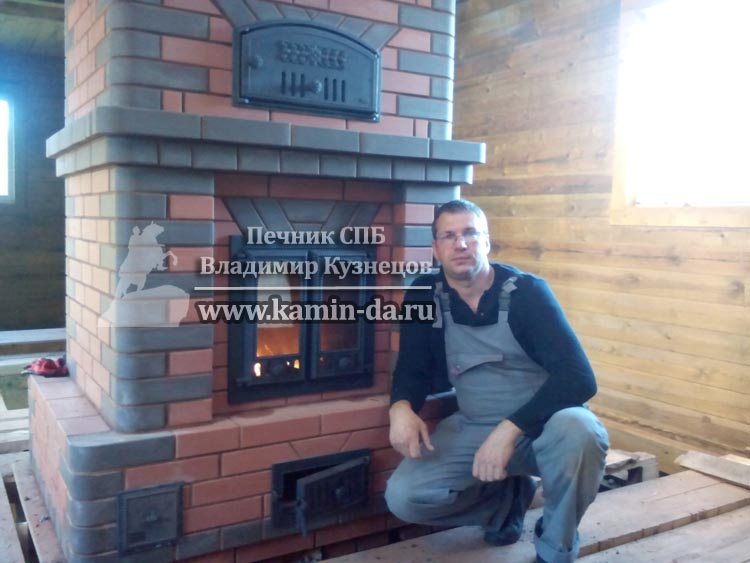
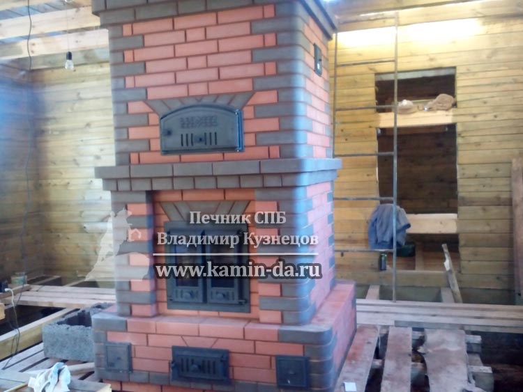

Кирпичная печь Финка с хлебной камерой в СПБ

В данной статье я хотел бы описать безграничные возможности уникальной печной конструкции - Отопительно-варочная кирпичная печь финка с хлебной камерой. Печь эта не имеет плиты, но тем не менее её конструктивные особенности позволяют гораздо больше, чем просто разогреть еду. Только вкуснейшие блюда и лучший хлеб можно запечь в хлебной камере! Но обо всем по порядку!
Печь финка с хлебной камерой
Итак ,почему же многие владельцы загородных домов отдают предпочтение не просто печному отоплению, а именно отопительно-варочной печи финке с хлебной камерой?
Как я уже писал ранее в своей статье об отпительно-варочных печах с плитой типа Шведка, кирпичные печи, в которых, помимо основной функции отопления есть ещё и дополнительная возможность приготовить пищу, являются наиболее эффективными и позволяют создать автономность как отопительного элемента, так и сделать вашу кухню независимой от света и газа!
И по традиции, для того, чтобы проиллюстрировать сегодняшнюю модель, я бы хотел представить вам свою недавнюю работу, кирпичная печь финка с хлебной камерой, работа № 40. Выполнена из прибалтийского кирпича ЛОДЭ. На фото - ваш печник, Владимир Кузнецов.
В отличие от шведки, в данной печи есть только духовка. На этом объекте мы вместе с заказчиком решили сделать большую топку со стеклянным дверцами. И в этой же классической печи финке я сконструировал схему работы, как в камино-печах. То есть помимо того, что дверцы топки - стеклянные, и сковзь них видно, как горит огонь, моя кирпичная печь финка также может работать в режиме камина, то есть с полностью открытой дверцей. Это одна из последних модных тенденций в области печного строения.
Для того, чтобы такая печь трансформировалась в открытый камин, достаточно установить задвижку в верхней части печи финки с хлебной камерой в режим камина, и дымовые газы, отходы горения будут сразу же поступать в трубу за счет эффективной тяги. Печные каналы, которые служат для нагрева внешних кирпичей, будут на время перекрыты, но зато вы сможете насладиться открытым пламенем. Если же вы бы попытались проделать такой трюк с обычной кирпичной печью, то сразу же получили бы клубы дыма в дом, которой пришлось бы проветривать.
И ещё несколько фотографий проделанной работы. Согласитесь, кирпичная печь финка вышла на славу?
Все свои работы я проверяю при сдаче объекта : Как и на следующей фотографии. Для проверки тяги и эффективности работы данная кирпичная печь финка с хлебной камерой так же была проверена мною. Яркое пламя, которое вы видите сквозь стеклянные дверцы - тому подтверждение!
Финская печь из кирпича в СПБ
На фотографиях выше - классический вариант Финской печи из кирпича. Классика жанра - это отопительная печь + хлебная камера. Принцип работы такой отопительно-варочной печи из кирпича довольно прост : духовка находится над топкой, и когда вы начинаете прогревать печь, духовой шкаф также нагревается. Духовка представляет собой железную камеру, в которую НЕ попадает дым. По своему качеству блюда получается такими же, как и в обычной газовой/электрической духовке.
Однако у таких финских печей из кирпича существуют дополнительные модификации. Как правило, они не сильно распространены, ибо это - уже дело конкретного заказчика, но тем не менее упомянуть об этом стоит. Вот, к примеру, ещё одна фотография, работа № 45, печь финка с хлебной камерой и небольшой скамейкой. Большое жаропрочное стекло даёт возможность наслаждаться огнем, а скамейка - погреться прямо у печи. Да, это, конечно очень интересное решение, но, однако же не каждому заказчику требуется такое решение.
Хлебная камера у печи Финки - это настоящий кладезь идей для любой хозяйки. Ранее, в статье об отопительно-варочных печах с плитой я описывал, как удобно иметь варочную плиту в печи. Конечно же, если у вас кирпичная печь финка, то разогреть чайник не всегда удобно ( хотя и вполне реально). К примеру, вам потребуется жаропрочная посуда, а ковшик с пластмассовой ручкой тут не подойдет. Однако по сравнению со шведской печкой - у Финской печи есть гигантское преимущество. Ни одно блюдо вы не сможете приготовить на простой плите так, как можно запечь его в духовке. Ну и конечно же, приготовление хлеба без такого духового шкафа - и вовсе невозможно!
Дорогие друзья, каждый раз, при написании статьи, я стараюсь отвечать на ваши частые вопросы и пытаюсь сделать своё ремесло прозрачным для заказчика. Все цены на мои печи финки вы можете просмотреть чуть ниже, для каждой работы есть стоимость моих услуг. Точная стоимость будет зависеть от нескольких факторов - высоты трубы, размера печи, а также от материала, который вы захотите использовать. К примеру Есть огромная разница между Прибалтийским кирпичом ЛОДЭ и российским аналогом - кировским кирпичом.
Надеюсь, моя статья оказалась для вас полезной, если вас заинтересуют мои услуги печника, то звоните по моему прямому номеру, или же оставьте заявку на сайте.
С уважением, Печник в Санкт-Петербурге, Владимир Кузнецов